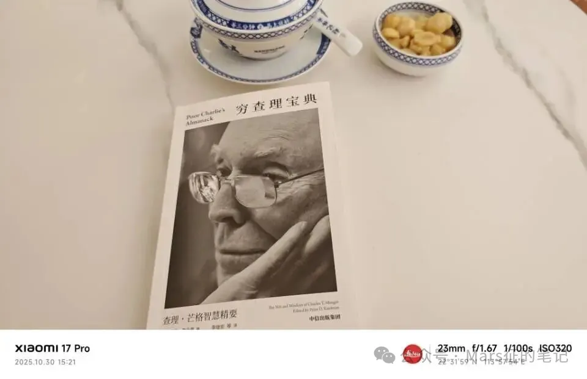

Seventeen years ago I wrote a poem in a second-floor room beside a national highway. Today, at thirty-five, I'm back in that same place — trying to make sense of where the road has led.
1.
In the summer of 2008, at eighteen — after the gaokao, at home on holiday — I bought my first computer. In a second-floor room beside National Highway 316, I wrote a poem called The Road Ahead, casting my eyes toward the future.
The ending I imagined held both dazzling growth and the coldness of the world. In that sense, perhaps I was a little bit oracle — the prophecy came true. I remember not wanting to write the ending too bleakly at eighteen, so I used ** to stand in for the actual words. Seventeen years later, in 2025, "bleak" is not an unfair word for the human heart — I mean the heart, not material progress or technology.
Seventeen is a prime number. Seven is a beautiful prime — the universe speaks without words: a week has seven days, music has seven notes, a rainbow has seven colors. The number seventeen has brought extraordinary luck to a certain brand. Standing at my own freezing point today, I wonder: can fortune turn? Can I be granted just a little luck?
2.
Seventeen years. Lucky ones. This prime number divides neatly into two parts: seven years studying (2008–2015), ten years working (2015–2025).
A few days ago I had a voice call with Teacher Tang in Beijing, talking through my current confusion. At the end, he used one word: lucky. He was right. I am a person who has been looked after — truly lucky. (Evidence: at ten years old, I nearly drowned three times and was saved each time.)
Seven years of school: two master's degrees, one in Beijing and one in Paris. I learned English, French, and Japanese. My major was computer science, and I interned at a gaming company on Huixin East Street in Chaoyang — across from Beijing Union University. My salary was apparently the highest among the student interns, though I had no idea at the time.
After graduating in 2015, I worked eight years at Huawei and Tencent in Shenzhen — the best internationally-oriented companies, large platforms, brilliant colleagues, and the finest offices I could have asked for: Huawei's Bantian headquarters, Tencent's Binhai Tower. When COVID ended in 2023, I set a world-travel plan in motion — fulfilling an impulse sparked at sixteen by a high school geography book. From September 30, 2023, when I left Tencent, to October 2025: two full years. After two years of wandering, standing at the milestone of thirty-five, I find myself lost and in pain. Thirty-five — too old to go back, not yet high enough to reach forward.
3.
This luck also showed up as sensitivity: to herd psychology, to sociology, to the way large companies manage their people. It showed up in my risk awareness and financial management. The Crowd, Fooled by Randomness, The Black Swan, Antifragile — these four classics gave me framework and practice. I was very fortunate not to have joined the collective game of Chinese real estate. Counting from Evergrande's collapse in 2021, 2025 is the fifth year of this financial crisis — which also became the backdrop for Tencent's cost-cutting that ended my contract.
Post-graduation luck #1: Salaries from Huawei and Tencent allowed me to build real savings — a first curve.
Post-graduation luck #2: I put 70% of those savings into Xiaomi stock at 1.810 HKD. Using tools, using the insight of smarter people, using the current of the times — making money with money. As long as I don't lose, I'll take it.
4.
Perhaps because of my sensitivity to social trends — or call it personal heroism (none of my business, yet I couldn't help paying attention; why couldn't I just be an ostrich?) — my occasional remarks left people puzzled. Two moments led my manager to misread me, and ultimately to the non-renewal.
① In 2021, stationed at a Tencent subsidiary in Wuhan, I helped the Shenzhen manager oversee the local team. At year-end, after the performance review, the manager asked — as was his custom — if I had a question. I asked from a macro-trend angle: Would the Shenzhen team be expanding headcount in 2022? He immediately read it as me complaining about having too many miscellaneous tasks. "Mars, I don't know what you're trying to say." I explained at once — it wasn't personal, I was trying to gauge the financial crisis's impact on the internet industry, based on signals I'd picked up from senior leadership chatting in the elevator. The misunderstanding seemed to pass.
② At the end of 2022, after another review, he again asked for my question. Again I approached it from a macro angle: "I feel like young people today are tending toward 'lying flat'..." He went silent. More than half a year later, in August 2023, he called me in and said my contract would not be renewed in September — citing that "lying flat" remark. Only then did I realize I'd been misunderstood a second time: he thought I was announcing my own checked-out attitude, when I was discussing a societal trend. By then it was too late. I accepted the outcome calmly — and set the world-travel plan in motion. People are alive. I had no mortgage. Money: you can't bring it when you're born, you can't take it when you die.
③ There was also a personal reason for leaving. People are products of their environment. Engineering-trained thinking is overly rational. Seven years of school, eight years of work — day and night conditioned by computational thinking. The cost: unable to relax, unable to speak lightly, unable to be interesting. And the essence of life is easy laughter, looseness, vitality. So I needed to break out and change myself. Only now, having stepped off the track I'd been on for over a decade, the difficulty of reinventing myself has hit me all at once. I am confused, and lost.
5.
When I graduated in 2015, I was a blank page — emotional intelligence, the ability to handle conflict and misunderstanding: all zero. Now in 2025, on this National Day holiday, standing in my hometown, I find myself thinking of her — a high school classmate. Six and a half years after graduation, in the half-year before I finished my master's, we became a couple. But she had already been working for two and a half years, and her plan to return to our hometown was already set. By June, when I graduated, my plan was Guangzhou or Shenzhen. So we had half a year, then long-distance, then well-meaning elders who made things worse — and that was the end of it.
Today I thought about adding her on WeChat and suggesting a coffee — just to reconnect, just as a courtesy. I also need people around me to offer some life-level advice. I'm someone who genuinely listens.
In the years that followed, I had two more relationships — one for four years, a gap of three years, then one for two years. There were problems and shortcomings on my side in both. Those experiences confirmed something: everything takes time to learn. Work requires investment. Love, family, and life all require investment. God is fair. Nothing can be done lazily.
6.
I first read The Three-Body Problem on a flight from Beijing to Guangzhou in 2015, the day I graduated. Later at Huawei, I read it a second time — taking notes and writing diary entries — so I could discuss it more precisely with my colleagues over lunch. In 2025, on a break in Los Angeles, I read the whole trilogy a third time, in English, to improve my language skills. Ten years of devotion to one book series. I suppose that makes me strange. Time to let it go. Time to forget. Having written it here, that's enough of a footprint.
7.
This is the seventh section of this diary. Seven is a beautiful prime. The universe speaks without words. A kind of magical luck.
I have four choices:
① Go to Tokyo, stay in IT, work at a high level — fully level up my Japanese and live Japanese culture.
② Attend NUS for a third master's in Financial Engineering, pivot to investment banking using my computer science background, and build a life in Singapore.
③ Double down on cross-border e-commerce with North America, become an international businessman, and build a life in California.
④ Do none of the above — continue traveling, and spend winters back in my home base: Shenzhen.
What makes all four agonizing is fundamentally the same: my cash savings haven't reached where I'd like them to be. Option ② means 500,000 RMB in tuition plus time. Option ③ means heavy capital investment. Option ④ means pure spending with no effort. All of them make me hesitate.
Here I offer a small prayer: in the next three to five years, may Xiaomi stock slowly and steadily rise. The appreciation of that asset would give me far more freedom of choice.
Since 2023, driven by a kind of overflow of goodwill, I've been practicing active generosity toward the people and situations around me. From a market-economics perspective, it hasn't paid off — economically, it's been a net drain. And some of the low behavior I've encountered — in contrast to the environments of Huawei and Tencent — has been hard to digest. Goodwill is finite. It must go to the right people and the right causes.
Keep going. In these coming months, I need to think clearly and choose one path — then throw myself into it completely.

"It is the time you have wasted for your rose that makes your rose so important."
— The Little Prince